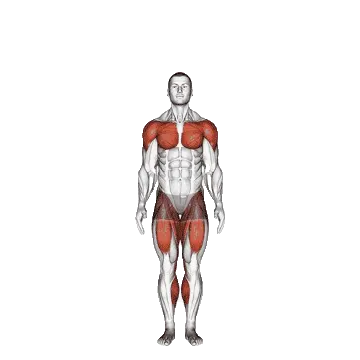

Jumping Jack
Jumping Jack é um exercício de core focado em Deltoides, Quadríceps, Glúteo máximo. Você pode revisar repetições médias e padrões de repetições em uma página.

Repetições médias: Intermediário
Referência para uma pessoa de nível intermediário.
Homens
87
Mulheres
44
Repetições médias de Jumping Jack
| Nível | ||
|---|---|---|
| Iniciante | < 1 | < 1 |
| Novato | 15 | 14 |
| Intermediário | 87 | 44 |
| Avançado | 193 | 81 |
| Elite | 325 | 123 |
Nota: estes valores estimam repetições médias que podem ser feitas em uma série. Peso corporal, amplitude, tempo e outros fatores pessoais podem afetar o desempenho. Veja as tabelas detalhadas abaixo.
Padrões de repetições de Jumping Jack
Homens por peso corporal (lb) [Repetições]
| Peso corporal | Iniciante | Novato | Intermediário | Avançado | Elite |
|---|---|---|---|---|---|
| 110 | < 1 | 24 | 124 | 276 | 469 |
| 120 | < 1 | 22 | 116 | 257 | 436 |
| 130 | < 1 | 21 | 109 | 241 | 408 |
| 140 | < 1 | 19 | 103 | 227 | 383 |
| 150 | < 1 | 18 | 97 | 214 | 361 |
| 160 | < 1 | 17 | 92 | 203 | 341 |
| 170 | < 1 | 16 | 87 | 192 | 324 |
| 180 | < 1 | 15 | 83 | 183 | 308 |
| 190 | < 1 | 14 | 79 | 175 | 294 |
| 200 | < 1 | 13 | 76 | 167 | 281 |
| 210 | < 1 | 12 | 72 | 160 | 269 |
| 220 | < 1 | 11 | 69 | 154 | 258 |
| 230 | < 1 | 10 | 66 | 148 | 248 |
| 240 | < 1 | 10 | 64 | 142 | 239 |
| 250 | < 1 | 9 | 61 | 137 | 230 |
| 260 | < 1 | 8 | 59 | 132 | 222 |
| 270 | < 1 | 8 | 57 | 128 | 215 |
| 280 | < 1 | 7 | 55 | 123 | 208 |
| 290 | < 1 | 7 | 53 | 119 | 201 |
| 300 | < 1 | 6 | 51 | 115 | 195 |
| 310 | < 1 | 6 | 49 | 112 | 189 |
Homens por idade [Repetições]
| Idade | Iniciante | Novato | Intermediário | Avançado | Elite |
|---|---|---|---|---|---|
| 15 | < 1 | 9 | 70 | 160 | 272 |
| 20 | < 1 | 14 | 84 | 187 | 316 |
| 25 | < 1 | 15 | 87 | 193 | 325 |
| 30 | < 1 | 15 | 87 | 193 | 325 |
| 35 | < 1 | 15 | 87 | 193 | 325 |
| 40 | < 1 | 15 | 87 | 193 | 325 |
| 45 | < 1 | 13 | 81 | 181 | 307 |
| 50 | < 1 | 10 | 74 | 168 | 286 |
| 55 | < 1 | 8 | 67 | 153 | 262 |
| 60 | < 1 | 5 | 58 | 137 | 237 |
| 65 | < 1 | 2 | 50 | 121 | 211 |
| 70 | < 1 | < 1 | 42 | 106 | 186 |
| 75 | < 1 | < 1 | 34 | 92 | 164 |
| 80 | < 1 | < 1 | 27 | 79 | 143 |
| 85 | < 1 | < 1 | 21 | 68 | 125 |
| 90 | < 1 | < 1 | 16 | 58 | 110 |
Mulheres por peso corporal (lb) [Repetições]
| Peso corporal | Iniciante | Novato | Intermediário | Avançado | Elite |
|---|---|---|---|---|---|
| 90 | < 1 | 16 | 52 | 98 | 153 |
| 100 | < 1 | 16 | 50 | 94 | 144 |
| 110 | < 1 | 16 | 48 | 89 | 137 |
| 120 | < 1 | 16 | 47 | 85 | 130 |
| 130 | < 1 | 16 | 45 | 82 | 123 |
| 140 | < 1 | 15 | 43 | 78 | 118 |
| 150 | < 1 | 15 | 42 | 75 | 113 |
| 160 | < 1 | 14 | 40 | 72 | 108 |
| 170 | < 1 | 14 | 39 | 69 | 104 |
| 180 | < 1 | 14 | 38 | 67 | 100 |
| 190 | < 1 | 13 | 36 | 64 | 96 |
| 200 | < 1 | 13 | 35 | 62 | 92 |
| 210 | < 1 | 12 | 34 | 60 | 89 |
| 220 | < 1 | 12 | 33 | 58 | 86 |
| 230 | < 1 | 11 | 31 | 56 | 83 |
| 240 | < 1 | 11 | 30 | 54 | 81 |
| 250 | < 1 | 10 | 29 | 52 | 78 |
| 260 | < 1 | 10 | 28 | 51 | 76 |
Mulheres por idade [Repetições]
| Idade | Iniciante | Novato | Intermediário | Avançado | Elite |
|---|---|---|---|---|---|
| 15 | < 1 | 9 | 33 | 64 | 100 |
| 20 | < 1 | 13 | 42 | 78 | 119 |
| 25 | < 1 | 14 | 44 | 81 | 123 |
| 30 | < 1 | 14 | 44 | 81 | 123 |
| 35 | < 1 | 14 | 44 | 81 | 123 |
| 40 | < 1 | 14 | 44 | 81 | 123 |
| 45 | < 1 | 12 | 40 | 75 | 115 |
| 50 | < 1 | 10 | 36 | 69 | 106 |
| 55 | < 1 | 8 | 31 | 61 | 96 |
| 60 | < 1 | 5 | 26 | 53 | 85 |
| 65 | < 1 | 1 | 20 | 45 | 74 |
| 70 | < 1 | < 1 | 15 | 38 | 63 |
| 75 | < 1 | < 1 | 10 | 31 | 54 |
| 80 | < 1 | < 1 | 7 | 24 | 45 |
| 85 | < 1 | < 1 | 4 | 19 | 37 |
| 90 | < 1 | < 1 | < 1 | 14 | 30 |
Nota: os valores da tabela são referências de repetições possíveis em uma série. Dados por peso corporal ajudam a estimar carga relativa, e dados por idade ajudam a observar tendências.
Músculos trabalhados
| Grupo | Músculos |
|---|---|
| Músculos principais | Deltoides, Quadríceps, Glúteo máximo |
| Músculos secundários | Posteriores de coxa, Panturrilhas |
| Estabilizadores | Oblíquos externos |
| Pegada | Nenhum |
Registre e analise no app Shiba
Revise carga, repetições e progresso em um só lugar.
Recordes mundiais
Atualizado: July 2, 2026
Como ler a tabela
| Nível | Descrição | Distribuição |
|---|---|---|
| Iniciante | Aprendeu a forma correta e treinou consistentemente por pelo menos 1 mês. | Base 5% |
| Novato | Treinou consistentemente por pelo menos 6 meses. | Top 80% |
| Intermediário | Treinou consistentemente por pelo menos 2 anos. | Top 50% |
| Avançado | Treinou consistentemente por mais de 5 anos. | Top 20% |
| Elite | Treinou especificamente este exercício por mais de 5 anos. | Top 5% |
Outros exercícios
Core
Bicycle Crunch
Core / Peso corporal
Reverse Crunch
Core / Peso corporal
Flutter Kicks
Core / Peso corporal
Mountain Climber
Core / Peso corporal
High Pulley Crunch
Core / Peso corporal
Standing Cable Crunch
Core / Cabo
Superman
Core / Peso corporal
Side Crunch
Core / Peso corporal
Roman Chair Side Bend
Core
Scissor Kick
Core / Peso corporal
Sit-Up
Core / Peso corporal
Cable Crunch
Core / Cabo